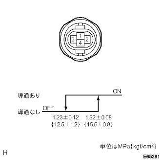

ヒータ&エアコンデイシヨナシステム プレッシャスイッチ回路 |
| 手順1 | エンジンコントロール コンピュータ単体点検（HP） |
IGスイッチをONにする。
SST(トヨタエレクトリカルテスター)を使用して、エンジンコントロールコンピユータのコネクタA13(HP)端子←→B7(E1)端子間の電圧を測定する。
| 測定条件 | 基準値 |
|---|---|
| 冷媒圧力正常時 | 1Ｖ以下 |
| 冷媒圧力0.19MPa｛2.0kgf/cm2｝以下または冷媒圧力3.14MPa｛32kgf/cm2｝以上 | 10－14Ｖ |
|
| ||||
| NG | |
| 手順2 | リキッド チューブSUB-ASSY A単体点検（プレッシャスイッチ） |
プレッシャスイッチのコネクタを切り離す。
高低圧側導通点検
SST(トヨタエレクトリカルテスター)を使用して、コネクタ1端子←→4端子間の導通を点検する。
中圧側点検
|  |
SST(トヨタエレクトリカルテスター)を使用して、コネクタ2端子←→3端子間の導通を点検する。
|
| ||||
| OK | |
| 手順3 | ワイヤハーネスまたはコネクター点検（IGスイッチ-プレッシャスイッチ） |
プレッシャスイッチのコネクタを切り離す。
 |
SST(トヨタエレクトリカルテスター)を使用して、プレッシャスイッチの車両ワイヤハーネス側コネクタ1(CUT+)端子←→ボデーアース間の導通を点検する。
|
| ||||
| OK | |
| 手順4 | ワイヤハーネスまたはコネクター点検（エンジンコントロールコンピュータ-プレッシャスイッチ） |
エンジンコントロールコンピユータのコネクタを切り離す。
 |
SST(トヨタエレクトリカルテスター)を使用して、車両ワイヤハーネスの各コネクタ端子間の導通およびGNDショート(短絡）を点検する。
| エンジンコントロールコンピユータ側 端子番号（端子記号） | プレッシャスイッチ側 端子番号 |
|---|---|
| A13(HP) | 4 |
|
| ||||
| OK | ||
| ||